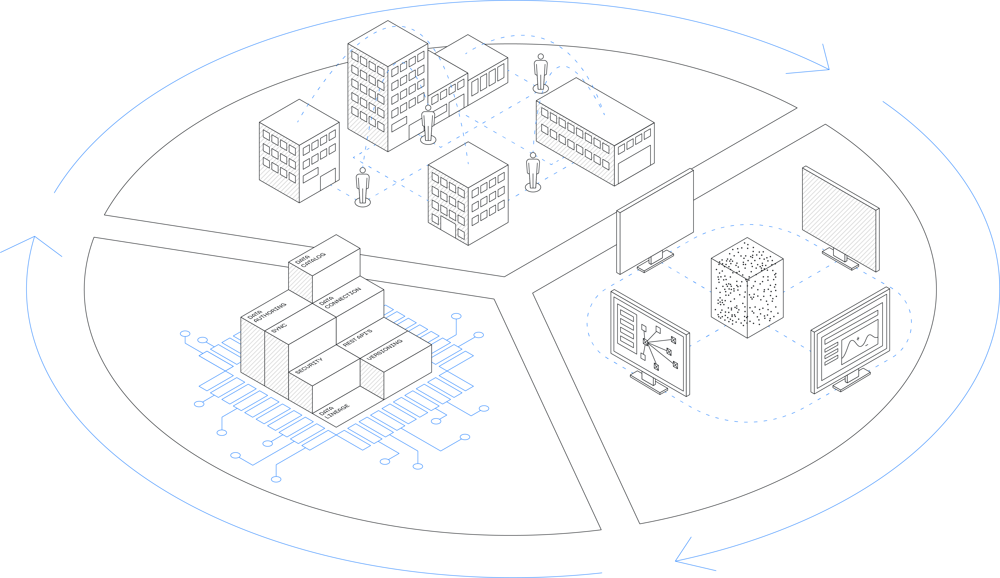
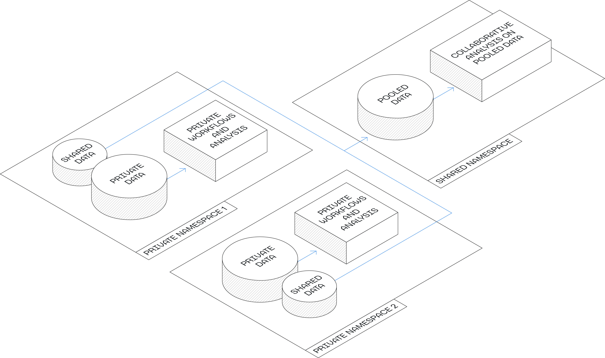
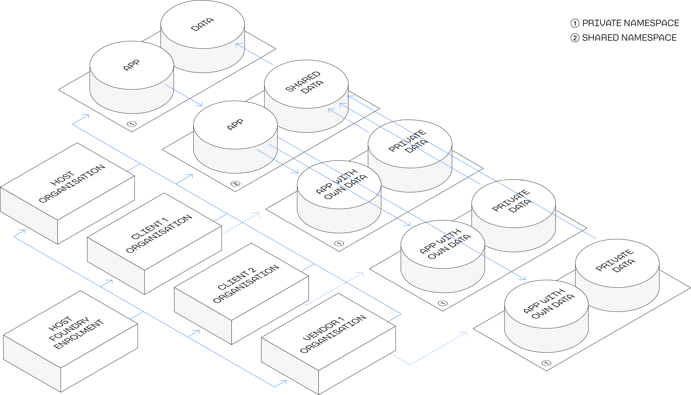
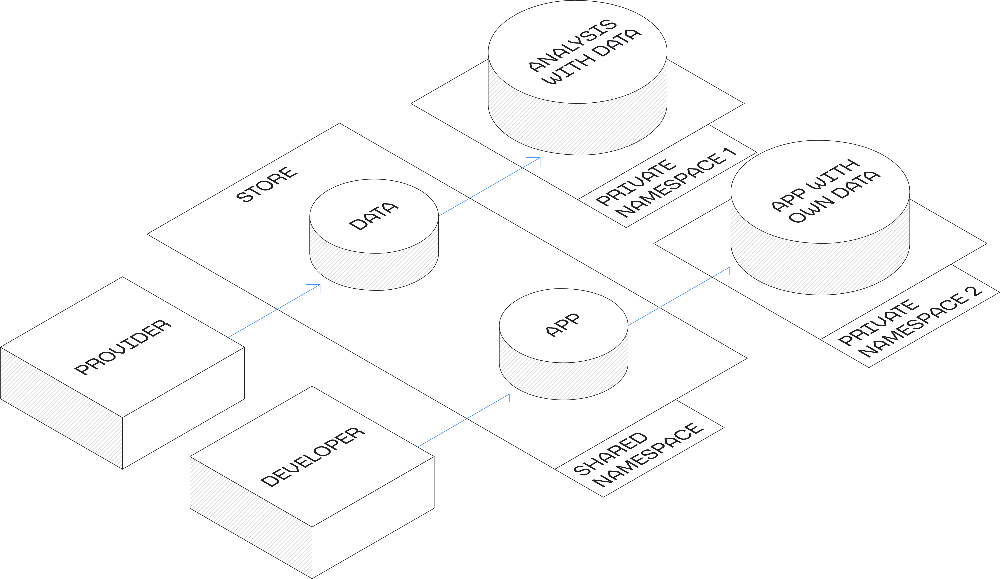

Modern businesses and operating systems are part of an interconnected landscape; for instance, political instability in one country can have a significant effect on the stock market of another, while material shortages in one industry can impact the price and availability of other in-demand products.
Furthermore, if organizations exist and operate in complete silos, they face costs in terms of lost resources and revenue, slower paths to innovation and discovery, decreased efficiency, and the risk of repeating mistakes others have already made. Organizational effectiveness can be impeded by non-integrated systems that require manual ad-hoc data sharing both within and outside of the organization, which can create significant risks in security and data governance.
Organizations can spend too much time requesting, collating, and normalizing necessary data, instead of understanding and acting on data to make better decisions.

This is where organizations and entire industries can benefit from being part of an ecosystem.
In an ecosystem, organizations can securely share data and applications with one another. Effective supply chains, drug discovery, and quality control are all examples of processes that benefit from information sharing.
For instance, retailers that can detect and adapt to upstream supply chain disruptions earlier may be able to generate more revenue while keeping working capital low. In this hypothetical scenario, manufacturers and vendors within the same ecosystem could receive insights into low retailer inventory, enabling them to optimize their manufacturing scheduling to improve profitability and inventory-keeping. Cross-organizational data and application sharing can benefit all parties involved.
Palantir Foundry enables cross-organizational ecosystems in which multiple organizations are able to securely share data in a standardized data format and application interfaces in a common platform. Foundry has a proven record of delivery on the security, data management, and application requirements needed to power ecosystems across the aviation, automotive, finance, and pharmaceuticals industries and enable mutually beneficial collaboration and data sharing.
Typically, ecosystem stakeholders can include enterprises, vendors, app developers, and other participants in an industry. Each party completely owns their own space and data governance, and maintains precise control over what is shared with whom, and what remains private.
Foundry addresses the key challenges of data access, harmonization, and collaboration by automating and standardizing sharing from any number of custom systems into one centralized format. Moving beyond the historical model where data needed a central point of control, Foundry can divide permissions such that every party controls their own space and data governance, with complete control over what is shared with whom and what is private to each organization.
Foundry supports several different styles of cross-organizational ecosystem models, which are often combined as the ecosystem grows. Below are a few common examples.
In the market ecosystem model, one organization introduces an ecosystem for others in the same market to join, acting as the conduit for mutually beneficial innovation.
For example, a leading pharmaceuticals client could create a market ecosystem to (1) pool research data for more robust results and (2) identify opportunities to partner in developing a new drug.
Market Ecosystem diagram

Foundry enables the market ecosystem model through the setup of private and shared spaces. Organizations can construct private pipelines and applications in projects within their private space, within which organizations can define which data is shared, as well as create sharable datasets through manual exports or automated data pipelines. These datasets can be used by multiple parties in joint projects in the shared space. Mandatory controls such as organizational markings make it easy to audit and control access to datasets on a granular level; data owners can see which organizations and the users within them have dataset access.
Collaborative analysis can be conducted in the shared space through applications like Contour and Code Workbook. If participants choose to use a common ontology, applications like Object Explorer, Quiver, and Vertex can be leveraged on top of the shared data asset.
A client ecosystem allows organizations to offer better products and services in several ways. In this context, a host organization may elect to adopt both a client and vendor ecosystem model. The benefits and configuration of client and vendor ecosystems are similar.
Clients and vendors can share data about their services or products that other ecosystem members may not have had access to in the past. This data sharing allows all parties to not only learn more about the product in operation and improve it over time, but can also lead to post-sale services such as the ability to anticipate problems or accelerate troubleshooting. For example, an aircraft manufacturer (vendor) might offer its clients (airlines) an app to make decisions about aircraft part warranty claims.
Second, organizations can complement existing products and services with digital offerings such as apps built upon the client or vendorâs data. In this instance, an aircraft manufacturer (vendor) might offer its clients (airlines) an app to make decisions about improving flight schedules.
Vendor and Client Ecosystem diagram

A third-party ecosystem model is when app developers, data providers or service providers are invited to contribute to the platform resources that are used by the existing ecosystem participants. Developers can develop, sell, and deploy the apps or data they bring to the platform to members of the ecosystem, since all participants are using a common ontology (see key elements below). The host of the ecosystem has the option to certify those developers, their data, and their apps, or facilitate a more informal approach by facilitating connections between developers and potential clients in the ecosystem.
This model tends to be most valuable when there is already an established network of different organizations in the ecosystem. Therefore, the third-party ecosystem model tends to evolve over time.
3rd Party Ecosystem model

The host organization will typically be the owner of the Foundry enrollment (that is, a contractual framework with Palantir defining the license and billing) and positioned as a facilitator. Through this enrollment, the host organization can onboard other organizations, whether they be clients, other market participants, third parties, or vendors; all are considered partners in the ecosystem. Foundry supports the ecosystem model by providing a shared space where the host organization is able to share Foundry applications, like Workshop modules, while members are able to provide their own data and share select data with the host organization.
By defining a common ontology, the host organization can be sure that members are able to leverage provided applications, regardless of the source system and data formats that each individual member has. Members can construct pipelines to transform their own proprietary data into the common data model in their private spaces. Common data transformation pipelines can be made into templates by the host organization to allow for fast onboarding.
Organizations often work with multiple clients, third party app providers, and vendors at a time. Vendors, for example, are often competing against one another to either offer the best product to the host organization, members, or others who are not on the platform. Data security and governance are critical for this ecosystem model. Members need to be confident that they can secure, administer, and control their own data in order to effectively participate. Data in Foundry is secured and access-controlled through mandatory controls to ensure that data that should be shared can be accessed by the intended organization(s) and the data which should not be shared remains inaccessible to users outside of the owner organization.
Listed below are the elements common to all ecosystem models with an example from the airline industry in the diagram below.
In order to fully benefit from the power of a connected network, every organization in the ecosystem must use the same schema - known in Foundry as an ontology - to represent real-world entities and their relations. Ecosystem participants can either use an industry standard or define their own ontology. An ontology is versioned in Foundry to enable incremental development (for instance, one entity at a time based on demand) such that improvements and input from a single ecosystem participant can benefit all participants. Note that using the same schema does not require that participants use the same source systems or raw data formats. )
Foundry provides a suite of data integration tools, such as Data Connection and Code Repositories, that enable pipeline building and transformation of data from various source systems and formats into a common data model. This means that participants in an ecosystem do not have to use the same source systems to be able to use a common data model. If there are commonalities in input data formats or input systems, the ecosystem host can define logic for integrating them once and share it with the participants within Foundry. For common source systems such as Salesforce and SAP, the host or user can leverage HyperAuto to accelerate the transformation of input data to the common ontology schema.
Applications are a way of using a combination of Foundry native tools to create a unique way of addressing a use case across ecosystem participants. Thanks to having a common ontology, ecosystem hosts can offer two types of apps:
With several organizations being present on a single platform, ecosystems require the highest level of platform and data security for all participants. Designed with this security in mind, Foundry has an array of tools that ensure the safety of both collaborative spaces that all ecosystem participants can access, as well as private spaces where only one or a subset of organizations have access and the ability to collaborate. These security tools include enrollments, spaces, and mandatory controls such as organization markings and security markings.
Want more information on this use case pattern? Looking to implement something similar? Get started with Palantir. â